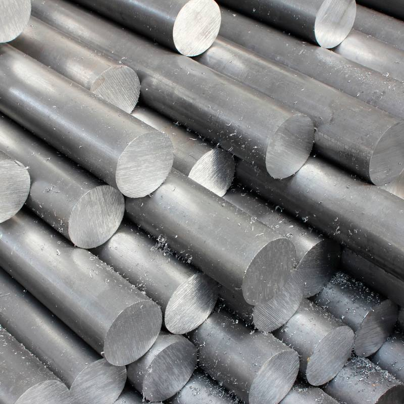

Сталь появилась очень давно и сыграла важнейшую роль
в истории человечества и продолжает это делать досихпор.
Она используется везде- от изготовления оружия до авиации и космических аппаратов
Сталь это сплав железа и углерода при этом железа должно быть не менее 45%
Самые первые образцы стали были обнаружены в Турции, им около 4000 тысяч лет
Сплавы стали Что делают из сталиНеверятно цилиндрическая сталь снизу
Неверятно стальные цилиндры сверху